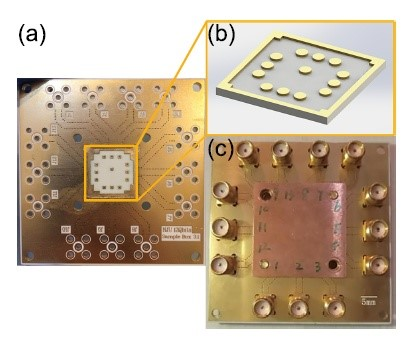

于扬
南京大学物理系教授
南京大学超导量子器件组组长


- 
最新动态
2019年12月8日，由中国企业联合会指导，亿欧·EqualOcean、工信部科技成果转化联盟联合主办的“2019世界创新者年会”（WIM 2019）在北京顺利举办。 于扬教授作为本次年会唯一受邀参会的量子计算领域专家，参加了“WIM2019创新领袖圆桌会议”，并围绕“前沿科技：未来十年，人类工作与生活将如何改变？”这一主题，发表了自己的见解, 得到大会组委会及各界专家学者的高度关注和认可。一同参与此次圆桌会议的还有加拿大皇家科学院院士、 滑铁卢大学终身教授李明，清华大学工业工程系教授、博导、全球创新学院副院长饶培伦， 升哲科技联合创始人付刘伟， 亿欧公司副总裁、亿欧智库研究院院长由天宇。

2019年5月18日，首届量子计算机及系统国际峰会论坛在宁举行。市委常委、区委书记李世贵，区长严应峻，开发区管委会主任张会祺等市区领导， 南京大学校长、中科院院士吕建， 中科大副校长、中科院院士杜江峰，以及于扬教授作为本次量子产业研发与合作战略联盟发起人之一，和来自国内外40多所高校、院所的量子计算领域的专家学者共同出席。

2017年5月22日，超导电子科学与技术前沿论坛在南京大学国际会议中心紫金厅举行，主题是量子信息时代的超导电子学——机会和挑战。 于扬教授做了题为利用超导量子比特模拟拓扑能带的报告。

联系我们
友情链接
南京大学超导量子器件课题组
- 地址：江苏省南京市鼓楼区金银街15号唐仲英楼
- 邮编：210093
- 电话：(025)83595535
- 苏ICP备10085945-1号南信备607号
©2019 南京大学超导物理器件课题组 All rights reserved.